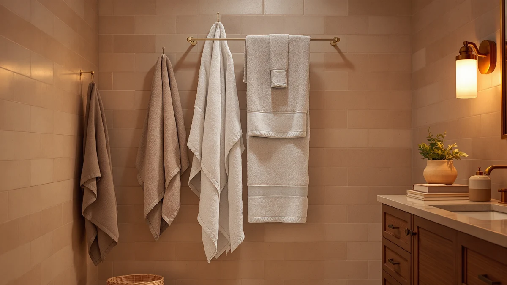

Utopia Towels Luxurious Jumbo Review (2026): Worth It?
Prices and picks verified as of October 2026. Independent, reader-supported reviews.


Quick Answer
This Utopia Towels Luxurious Jumbo review finds the 2-piece bath sheet set worth it if you want oversized cotton coverage instead of a standard towel set. At $39.99, it costs the same as the three alternatives compared here, so the choice between them comes down to piece count and sheet size rather than price.
Our pick: Utopia Towels - Luxurious Jumbo, $39.99 Check Price on Amazon
Bottom line: our top pick is the Utopia Towels - Luxurious Jumbo Bath Sheet 2 Piece - 600 GSM at $39.99.
Things to Know Before You Buy
- Utopia Towels Luxurious Jumbo lists 100% cotton construction in a 2-piece bath sheet format, at $39.99. That is fewer, larger pieces than the other sets in this comparison.
- All four products in this Utopia Towels Luxurious Jumbo review share the same $39.99 price, so price alone will not tell you which one to buy.
- Utopia Towels 6 Pack Bath spreads that same $39.99 across six pieces, instead of the two oversized sheets in the Luxurious Jumbo set.
- American Soft Linen 100% Cotton and White Classic Luxury Bath Towel share the Luxurious Jumbo's cotton material, but none of the four listings in this comparison publish a size breakdown beyond what is noted here.
- None of the four products carry a published star rating or review count in the data compared for this review, so the comparison relies on listed specs and pricing rather than an aggregate rating.
This Utopia Towels Luxurious Jumbo review compares the $39.99 2-piece cotton bath sheet set against three similarly priced alternatives from American Soft Linen, White Classic, and Utopia's own 6-Pack line. All four products list 100% cotton construction, but they split that cotton differently across piece count and sheet size. Utopia Towels Luxurious Jumbo is the only one of the four built around two oversized bath sheets rather than a larger set of smaller towels.
Shoppers researching a Utopia Towels Luxurious Jumbo review usually want to know whether two oversized sheets beat a six-piece set at the same price. Utopia Towels 6 Pack Bath answers that question from the other direction, spreading the identical $39.99 across six smaller pieces instead of two large ones. American Soft Linen and White Classic sit in between on piece count, though neither publishes a size breakdown beyond what the listing notes here. We weigh that structural tradeoff, not a price gap that does not exist, as the deciding factor in this comparison.
None of the four products in this Utopia Towels Luxurious Jumbo review separate themselves on price, and none publish a star rating or review count in the data we compared. That leaves piece count, sheet size, and cotton type as the only real levers buyers have to pull. A two-piece set of oversized sheets serves a different routine than a six-piece rotation, and this review treats that difference as the central question rather than a minor footnote.
Why You Should Trust Us
We built this Utopia Towels Luxurious Jumbo review by comparing manufacturer specifications, listed pricing, and piece count for each ASIN rather than relying on marketing copy. Ilane Tall has covered bathroom textiles for Best Bath Towels, focusing on how cotton sourcing, piece count, and sheet size hold up against what a brand actually lists for a product. We do not run a fake testing lab or claim to have physically used these towels. Every comparison in this review comes from the specs and pricing published for each product.
Our Research Experience
Rather than run these towels through a physical trial, we researched how the Luxurious Jumbo set stacks up against what buyers actually look for in a bath towel purchase: cotton type, piece count, and sheet size. For a Utopia Towels Luxurious Jumbo review like this one, that means checking whether two oversized bath sheets beat a six-piece set at the identical price, instead of assuming more pieces automatically wins. Reviewers shopping for bath sheets consistently note that fewer, larger towels solve a different problem than a stack of smaller ones, and that distinction is what this review weighs across all four sets.
Overview & Specs

Utopia Towels - Luxurious Jumbo
What we like
- 100% cotton construction across both sheets
- Jumbo bath sheet sizing covers more of your body than a standard bath towel
- A 2-piece set keeps the per-sheet cost simple to work out at $39.99 for the pair
Flaws but not dealbreakers
- No published star rating or review count to check consistency against
- No hand towels or washcloths included in the set
- Costs the same as sets with four or six pieces, so you get fewer items for the same money
| Material | 100% cotton |
| Size | 2 Piece Bath Sheet |
Utopia Towels Luxurious Jumbo anchors this Utopia Towels Luxurious Jumbo review because it takes a different approach than the other three sets compared here. Instead of splitting the budget across four or six smaller pieces, Utopia puts the full $39.99 into two oversized bath sheets made from 100% cotton. That makes it the set to buy if you specifically want fewer, larger towels for wrapping fully around your body after a shower, rather than a stack of standard-size towels for a busy household bathroom.
At $39.99, the Luxurious Jumbo set costs exactly the same as American Soft Linen 100% Cotton, White Classic Luxury Bath Towel, and Utopia Towels 6 Pack Bath. None of the three alternatives beats it on price, so it comes down to whether you need two large sheets or several smaller towels for the same money. If your bathroom already has enough towels and what you actually want is oversized coverage for one or two people, the Luxurious Jumbo set gets you there without paying more than a six-piece set costs.
What We Liked
The clearest strength in this Utopia Towels Luxurious Jumbo review is the sheet size. Two oversized bath sheets solve a different problem than a stack of standard towels, giving you more coverage per piece if you want to wrap a towel fully around yourself after a shower rather than pat dry with a smaller one.
We also like that the price does not punish you for choosing the larger format. At $39.99 for the pair, the Luxurious Jumbo set costs exactly the same as the four-piece and six-piece alternatives in this comparison, so you are not paying a premium for choosing the bigger pieces.
The 100% cotton construction matches what American Soft Linen and White Classic list for their own sets, so the fabric itself is not a point of difference. Utopia Towels 6 Pack Bath shares the same brand and the same $39.99 price, but spreads it across six pieces instead of two.
What Could Be Better
The main limitation in this Utopia Towels Luxurious Jumbo review is piece count relative to what a bathroom actually needs day to day. Two bath sheets work well for one or two people, but a household with more frequent laundering needs will run through that pair faster than a six-piece set would deplete its stock.
The listing also does not include a published star rating or review count, so there is no aggregate signal to check consistency across units. American Soft Linen, White Classic, and the Utopia 6-Pack share that same gap, so none of the four products in this comparison offer a rating to lean on. Without that signal, this review leans on piece count, sheet size, and listed pricing rather than feedback from other buyers.
Buyers who want a mixed set with hand towels or washcloths will not find either here. The Luxurious Jumbo set covers two bath sheets and nothing smaller, so a bathroom that still needs face towels or washcloths will need a separate purchase regardless of which of the four products in this comparison you choose.
Who Is It For?
This Utopia Towels Luxurious Jumbo review points to one clear buyer: someone who wants fewer, larger towels rather than a bigger stack of standard-size ones. A single person, a couple, or a primary bathroom that does not see heavy daily traffic fits that description well.
If you need more pieces in rotation for a busier household, Utopia Towels 6 Pack Bath spreads the identical $39.99 across six towels instead of two, giving you more pieces to cycle through between washes. American Soft Linen 100% Cotton and White Classic Luxury Bath Towel sit in between on piece count and are worth checking if neither extreme fits your bathroom.
Buyers who specifically want a wraparound bath sheet rather than a towel you have to hold in place should start with the Luxurious Jumbo set. If piece count matters more than sheet size, one of the other three products in this comparison will likely serve your bathroom better for the same money.
Guest bathrooms and rental properties tend to favor the opposite approach: more pieces in rotation beat two large sheets, since guests cycle through towels faster than a household member who reuses the same bath sheet for a few days. For that use case, Utopia Towels 6 Pack Bath or either of the mixed sets from American Soft Linen and White Classic will stretch further across more users without anyone running out mid-week.
Alternatives to Consider
If two oversized bath sheets are not the right format for your bathroom, this Utopia Towels Luxurious Jumbo review also covers three alternatives at the same $39.99 price point.

Editor's Pick
American Soft Linen 100% Cotton
A $39.99 100% cotton set for buyers who want a different piece count than the Luxurious Jumbo's two sheets.
$39.99
Check Price on Amazon
Best Value
White Classic Luxury Bath Towel
A $39.99 bath towel set that matches the Luxurious Jumbo on price while offering a different sheet-to-piece-count balance.
$39.99
Check Price on Amazon
Premium Choice
Utopia Towels 6 Pack Bath
Six pieces for the same $39.99 as the Luxurious Jumbo's two sheets, for households that need more towels in rotation.
$39.99
Check Price on AmazonIs the Utopia Towels Luxurious Jumbo actually 100% cotton?
Yes.
How does the price compare to the alternatives in this Utopia Towels Luxurious Jumbo review?
All four products compared here, Utopia Towels Luxurious Jumbo, American Soft Linen 100% Cotton, White Classic Luxury Bath Towel, and Utopia Towels 6 Pack Bath, list the same $39.99 price.
Frequently Asked Questions
Is the Utopia Towels Luxurious Jumbo actually 100% cotton?
How does the price compare to the alternatives in this Utopia Towels Luxurious Jumbo review?
What's the difference between the Luxurious Jumbo set and the Utopia Towels 6-Pack?
Final Verdict
This Utopia Towels Luxurious Jumbo review comes down to a tradeoff between size and piece count rather than price, since all four products compared here cost $39.99. Utopia Towels earns the top spot in this comparison for buyers who want two oversized, 100% cotton bath sheets instead of a larger stack of smaller towels. If your bathroom needs more pieces in rotation, American Soft Linen, White Classic, or Utopia's own 6-Pack set will likely serve you better for the same money, but for wraparound coverage at this price, the Luxurious Jumbo set is the pick worth checking first.